INCIDENT IN CONAN EXHIBIT Congratulatory Exhibit “Conan Exhibit”
The Two Who'd Never Shared a Panel, Standing Together at the Door
Detective Conan has run in serialization in Japan since 1994, and this 20th-anniversary overseas touring exhibition landed in Taipei's Huashan 1914 Creative Park in late 2015, inside Warehouses C and D of the East Zone 2 building. We handled the spatial design and full design-build contract, bringing the original Japanese exhibition content over 100% intact and redesigning the visitor circulation and zone layout around the existing warehouse volume, so the original story and interactive puzzle mechanics could be recreated inside a Taiwanese venue.
At the entrance stood a life-size "Conan x Shinichi" figure specially commissioned from creator Gosho Aoyama, breaking the 20-year rule that the two characters had never once appeared together in the same space; beside it, every manga cover published across those 20 years let visitors see the series' full timeline the moment they walked in.
A Protected Warehouse, Zero Nails Allowed
Warehouses C and D fall under cultural heritage protection. Under the site's usage regulations, exhibition construction was prohibited from drilling, fastening, or fixing anything to the existing structure; every wall, ceiling, and floor surface had to stay in its original state. We built the set walls and display fixtures on a fully zero-penetration, freestanding structural system, distributing the load through weighted bases and support frames so the building itself never took a single point of damage. The warehouse floor also had level changes we had to address during circulation planning, using gentle ramps and raised flooring to bridge the transitions and keep the route both smooth and accessible.
Turning Flat Panels Into a Wall
The exhibition drew heavily on panel artwork from the original manga, and our job was converting those flat comic-strip images into large-scale three-dimensional display pieces, character-introduction walls and story walls, paired with life-size figures to recreate the spatial feel of each scene. Production ran from scanning and cross-checking the original artwork, through image restoration and full-scale output, to cutting and assembling the wall substrates and finally calibrating every figure's position against its wall graphics. The sheer volume in each zone, combined with the demand for detail, made this the most time-consuming item on the schedule and the one that needed the most lead time.
Four Rooms, Each Sealed Off in Its Own Way
The Mouri Detective Agency was rebuilt as a mysterious crime scene, complete with bloodstains, signs of struggle, and interactive sound effects like a ringing telephone and television footage; photography was banned in this zone to protect the puzzle's secrecy.
The Crime-Solving Techniques zone translated classic mystery-solving methods from the manga into hands-on scientific demonstrations visitors could operate themselves.
The Gosho Aoyama manuscript gallery unveiled the author's treasured hand-drawn pages, including one drawn specifically for this anniversary, under gallery-grade lighting and casework.
The Classic Scenes gallery used life-size figures to recreate four iconic moments: the tension of Conan's standoff with the Black Organization, the romance of Conan the LOVE STORY, the dazzling showdown between Kaito Kid and Conan, and the friendship of the Junior Detective League, each set apart as its own space for visitors to photograph.
Built Between Two Kinds of Can't
Every set piece, prop, and printed graphic had to match the official materials supplied by the Japanese licensor exactly, reviewed and cross-checked before any of it could be built, down to the exact size and color code of a single poster. On one side sat a protected heritage warehouse that couldn't be touched; on the other, licensed materials that couldn't be altered. Twenty years of Conan's world came together entirely within those two constraints.
Have a project in mind?
Get in Touch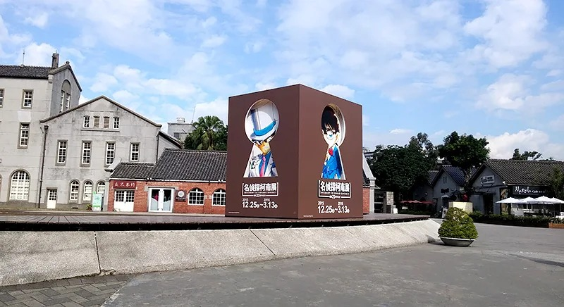
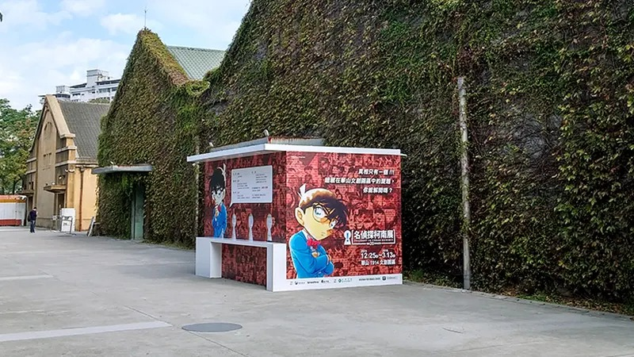
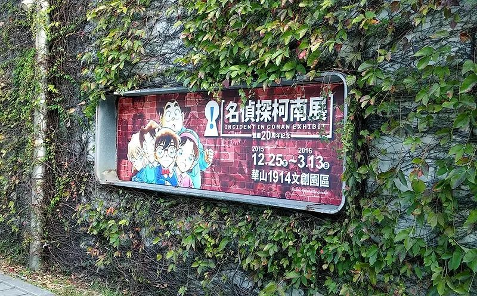
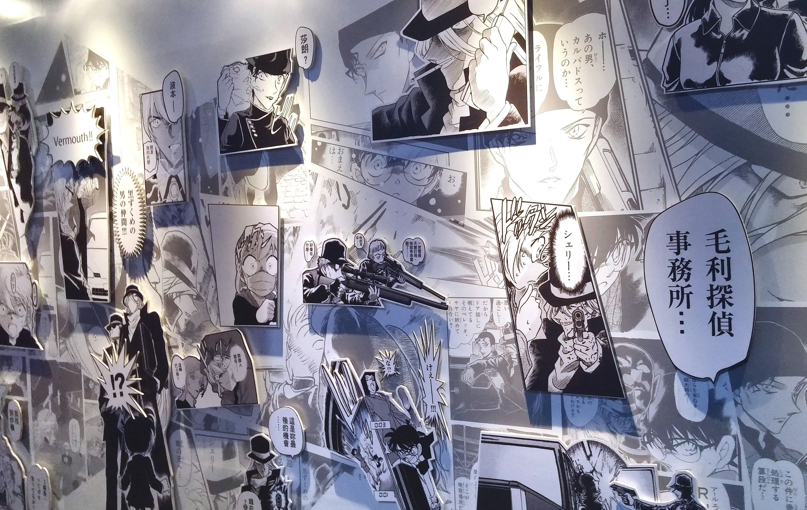
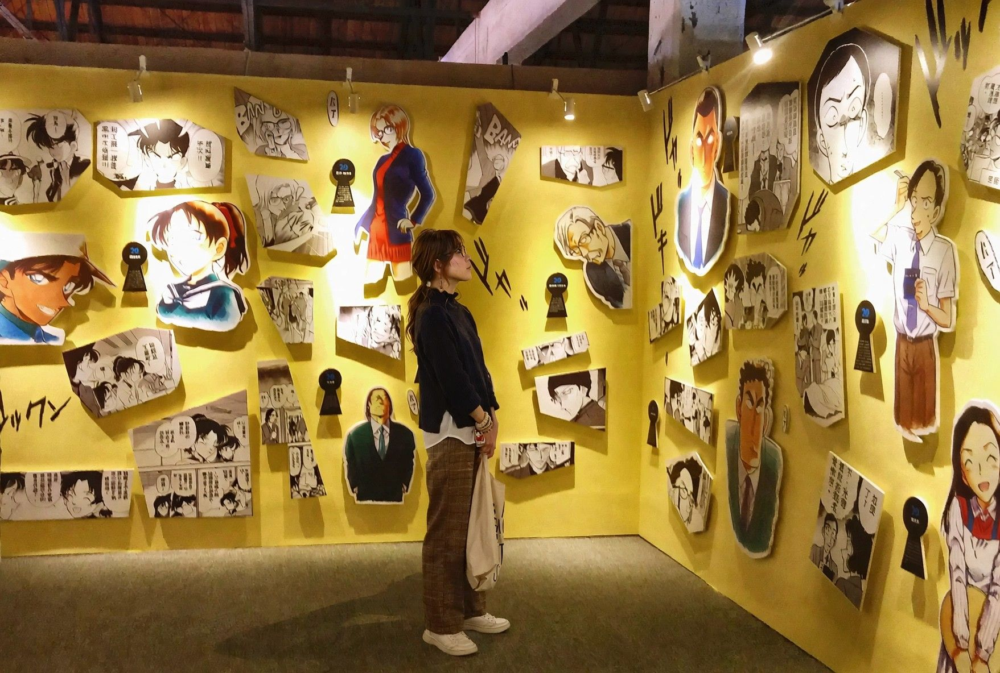
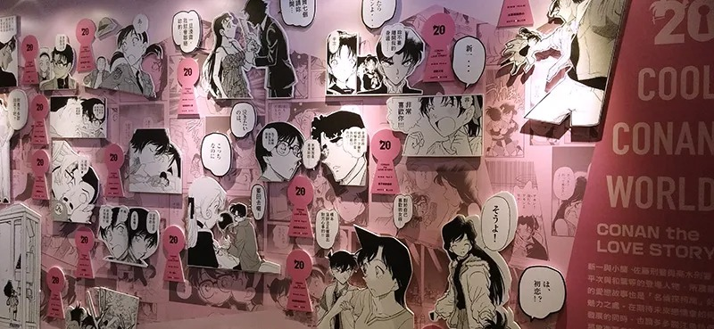
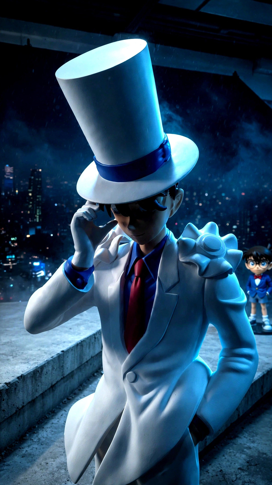
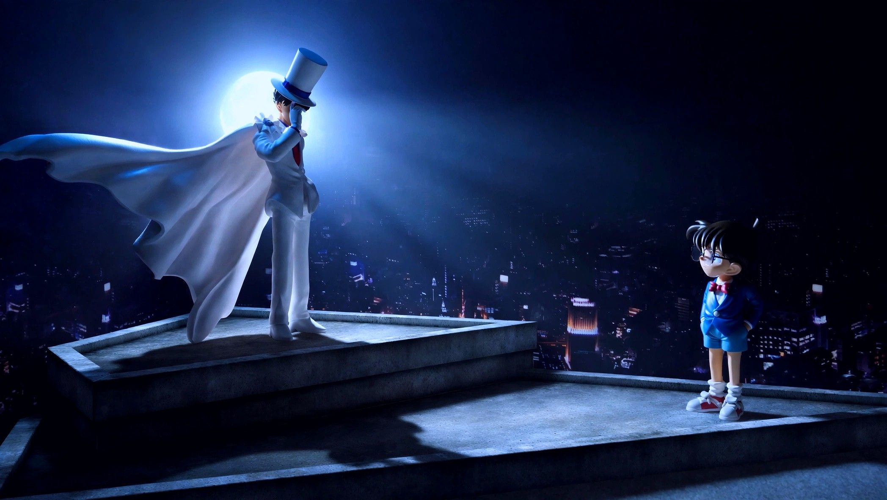
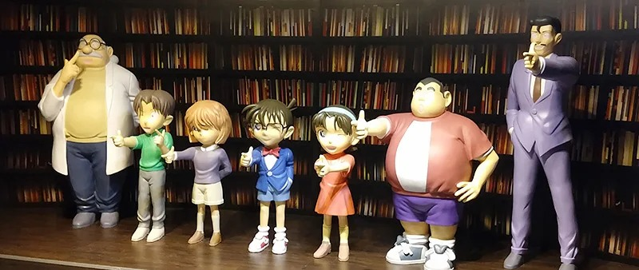
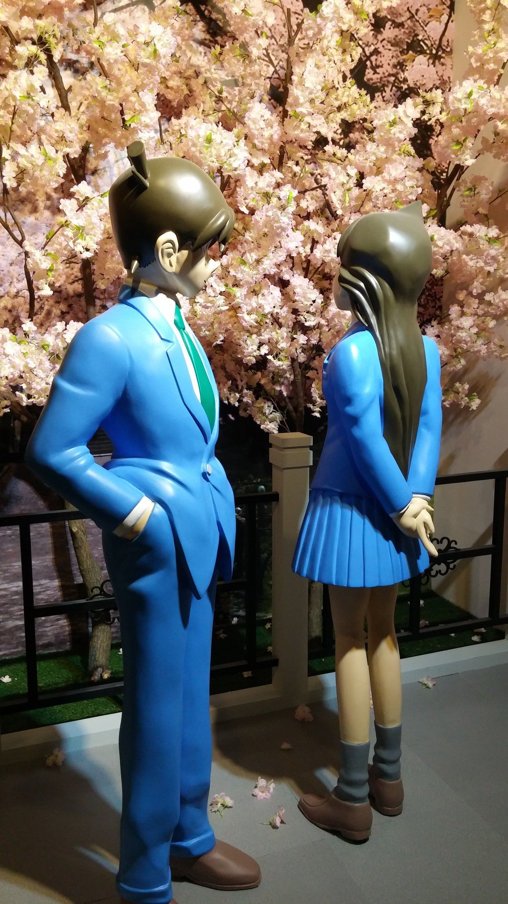
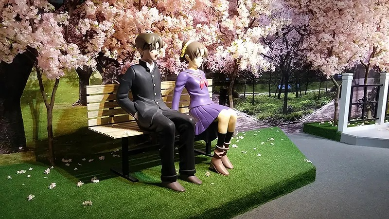
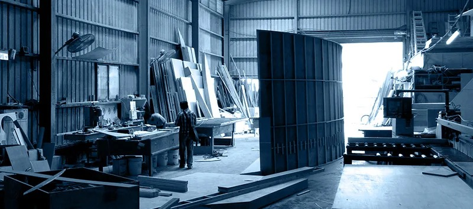
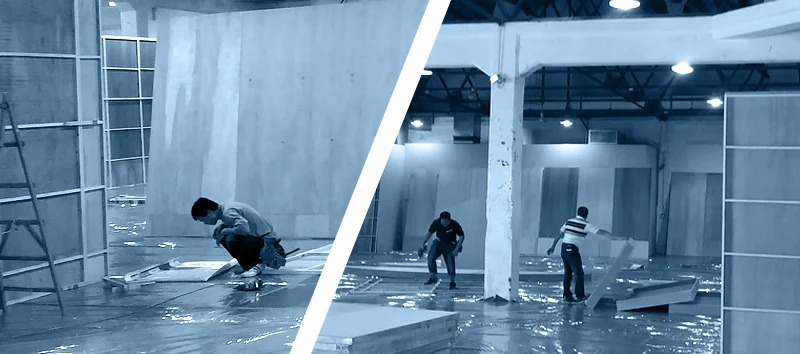
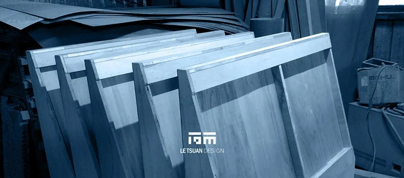